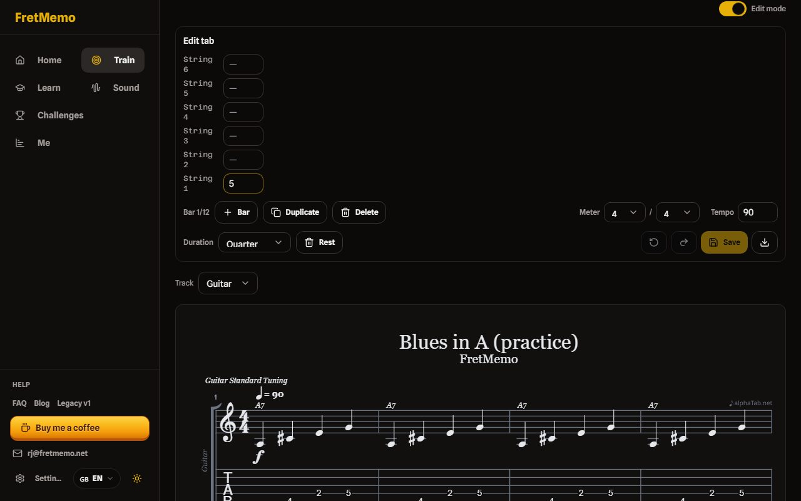

FretMemo has a free online guitar tab editor inside its song viewer. You import a Guitar Pro file, switch on "Edit mode", change frets, rests, durations, bars, tempo and meter, and then save the song in the browser or download it as a .gp file. It needs no account. It edits songs you have imported, and there is no blank "new song" to start from.
It's a small editor and I built it for fixing tabs: the wrong fret in bar 12, a missing bar, a meter change someone skipped. If you want to write a whole arrangement from nothing, a full desktop notation program will serve you better, and I'll say so again in the limits.

Why fix a tab instead of living with it
Tabs passed around online often have mistakes, like a fret off by one or a rhythm simplified until it no longer matches the recording. Learning from a wrong tab can be worse than learning by ear, because you trust what's written and stop listening.
When I find one now, I fix it on the spot and keep practicing. The editor sits in the same viewer where you loop and score bars, so correcting a fret takes a few seconds in the middle of a session.
What the editor can change
The editor works on one beat at a time: the beat under the playback cursor. When you switch on "Edit mode" it starts on the first beat of the song. For that beat, the "Edit tab" panel shows one fret box per string. Type a fret (0 or higher) to add a note on that string, or clear the box to remove it. "Duration" sets the beat to whole, half, quarter, eighth or sixteenth, and "Rest" turns it into a rest.
The bar tools sit in the row below. The panel shows your position, like "Bar 1/12", and "+ Bar", "Duplicate" and "Delete" add a bar at the end, duplicate the current one, or remove it. "Meter" sets the time signature per bar: the top number can be 1, 2, 3, 4, 5, 6, 7, 9 or 12, and the bottom one 2, 4, 8, 16 or 32. "Tempo" is a single value for the whole song, from 10 to 400 BPM.
The undo and redo buttons go back and forth up to 50 steps. While you have changes you haven't saved, the panel says "Unsaved changes".
Saving and downloading
"Save" writes the edited song back into your browser's storage as a GP7/GP8-format file, so the song in "Your Songs" is now the edited one. Your practice progress for the song (speed, loop, mic stats) moves to the new version with it. Saving also turns "Guitar sound" off.
"Download .gp" is the download button next to "Save". It gives you the current state as a .gp file named after the song, including edits you haven't saved yet. I'd download after any edit you care about, because songs stored in the browser disappear if you clear its site data.
How to edit a Guitar Pro tab online
- Open Train on fretmemo.net, expand "Your Songs", click "Import Guitar Pro" and pick your file.
- In the viewer, make sure "Guitar sound" is off, then switch on "Edit mode".
- Move the playback cursor to the beat you want to change, for example by playing and pausing on it.
- In "Edit tab", type or clear fret numbers, and set "Duration" or "Rest".
- Use "+ Bar", "Duplicate", "Delete", "Meter" and "Tempo" for changes to bars and timing.
- Press "Save" to keep the change in the browser, or the "Download .gp" button to get a file.
Fixing a wrong note while you practice
The way I use it: I'm looping a passage (the how to practice a song on guitar post covers loops and mic scoring), something sounds off against the recording, and I drop to 0.5× to hear which note it is. Then I make sure "Guitar sound" is off, turn on "Edit mode", fix the fret, save, and run the loop again with "Score with mic" to check my own playing against the corrected tab.
The same loop works for rhythm mistakes. If a bar has the right notes but the wrong durations, change "Duration" beat by beat and listen again. If the transcriber missed a bar in 3/4 inside a 4/4 song, select that bar and change its "Meter". If you haven't imported anything yet, start with the Guitar Pro viewer online guide.
Limits
- No blank song. Editing starts from a Guitar Pro file you imported, so to write something new you need a file to start from and "+ Bar" to grow it.
- No controls for bends, slides, hammer-ons or other techniques, and the panel has no dotted-note control.
- One tempo for the whole song.
- "Edit mode" is disabled while "Guitar sound" is on, and saving switches "Guitar sound" off.
- The number of string boxes follows the tuning in your Settings, not the track. I haven't checked how that behaves with 7-string or bass tracks.
FAQ
Is there a free online guitar tab editor that saves Guitar Pro files?
Yes. FretMemo's tab editor is free in the browser and works on Guitar Pro files you import. Save keeps the edited song in your browser in GP7/GP8 format, and Download .gp gives you a .gp file to keep.
Can I edit a .gp5 file online?
Yes. Import the .gp5 file into FretMemo's Your Songs, switch on Edit mode and change frets, rests, durations, bars, tempo or meter. When you save or download, the result is a .gp file rather than a .gp5.
Can I write a new guitar tab from scratch in FretMemo?
Not from a blank page. The editor works on a song you have imported, so you start from an existing Guitar Pro file and change it, adding bars with + Bar when you need more.
Does the tab editor support bends and slides?
No. The panel edits fret numbers, rests, durations, bars, tempo and meter. There are no controls for bends, slides or other techniques.
Fix a tab in the browser
Import a Guitar Pro file, switch on Edit mode and save the corrected version as .gp.
Open the editor Free, no account, runs in the browser.